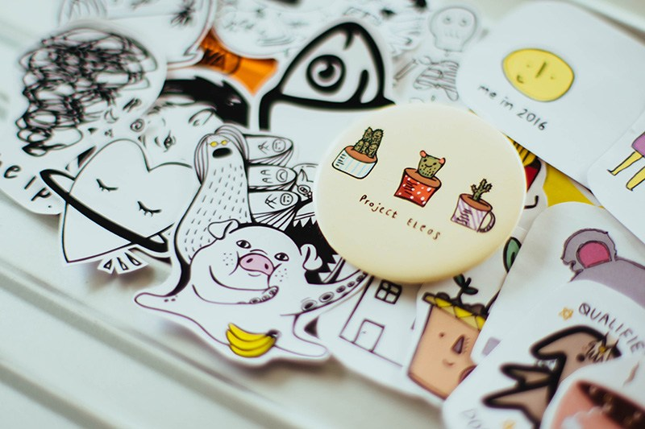

What is working for influential brands on Pinterest, that your business has not maximized yet?
What do the top brands on Pinterest have in common? They have a strong Pinterest presence and they have optimized the use of social media platforms to their advantage. So, there should be more than a few tricks to learn from them.
Pinterest has expanded its potential as an enormous merchant over the past years. And since it is a purchasing platform, it is dominated mostly by women, and their age range is somewhere between the ages of 20-30. They are the ones who usually do the shopping, and make some, if not all the decisions in their respective households.
Pinterest declared by January 2018 that they have reached the 175 million monthly active users mark, many of which are using the site for swapping recipes but also beauty tips, comparing products, and more.
Pinterest is said to generate more revenue per click as compared to Twitter and even more as compared to Facebook. This is mainly because Pinterest is an inspiration-driven directive, which makes it an absolutely all-important social media platform for businesses to be on.
Now, you could be asking what are these businesses doing that you have not yet tapped into. How did they use Pinterest to make their brand more influential as compared to others? What leverage do they have?
Pinterest is still growing daily, and these businesses are taking advantage of the opportunity that Pinterest is bringing for their brands and products.
Here are 7 social media tips from the most influential brands on Pinterest which are sure to boost your sales on Pinterest.
#1 Make Use Of The Psychological Properties of Color
There are psychological properties of color that have been used since the beginning of online marketing. And every web developer knows how to use these to their advantage. Reddish-orange images usually get more repins as compared to those images with a shade of blue. This is perhaps because of the fact that red is such a powerful color that it is associated with confidence or excitement and even aggression.
Pinterest is an extremely successful vending and marketing tool because it is a platform that is centered on selling lifestyles. It shows a visual story that supports this glamorous lifestyle. So these influential brands awarded as the best in Pinterest doesn’t just sell their brands: These influencers market a lifestyle. This, of course, means to give the products some presentation context. Don’t just create boards for the sake of it, but create boards that allude a certain aesthetic beauty, and make it engaging for your target audience and promote that beauty in their everyday lives.
#2 Setting up Rich Pins

Pinterest relies on compelling visual content and mostly what gets noticed are those that have a high impact on the users.
So what are rich pins?
These are a special type of pins that allows users to add a context and more information depending on what you want to achieve. Pinterest rich pins are:
- App Pins
- Article Pins
- Movie Pins
- Place Pins
- Recipe Pins
- Product Pins
The one most marketers should take notice more and be excited about is the product pin. This is one strategy many influential brands find very useful.
Product pins allow you to include a link where you can purchase the product as well include pricing and promotion information with the pin itself. Product pins include information like real-time pricing, and of course availability. Pinterest also notifies users if there are pricing changes on a product they’ve perhaps noticed and repinned.
Pinterest is a very unique and valuable social media platform, especially for companies. Reap the benefits of using the site by increasing your brand awareness and uniqueness. This is sure to increase your sales.
#3 Be Mindful of the Trends and Holidays
Just like these influential brands in Pinterest, they pay attention to the ever-changing season. Look at the malls during holiday seasons. They showcase gifts for your beloved during Valentines. And have plenty of costumes for Halloween. It is basically the same for Pinterest. Pins should have Christmas themes during the Yuletide season or have your pins with the color green during St. Patrick’s Day.
Beyond these seasonal holidays are seasonal trends, another example would be pins about hairstyle and vacation spots during the summer. Or perhaps, wedding-inspired pins during June. There are also the more popular Diet pins especially after lavish meals during the holidays.
Maximize your pins by sharing them on other social media platforms. Share these pins thru blogs and/or forums and promote the lifestyle your brand is trying to project. This will circulate your brand and, of course, will generate more traffic to your site.
#4 Products in Tutorials or DIYs
The audiences on Pinterest are mostly women looking for ideas for new recipes, crafts, and home décor. They are more likely interested in tutorials, guides, and especially do-it-yourself projects (DIY).
For your business to gain more on this traffic growth and repins, publish attention-grabbing how-to’s and guides on your Pinterest; after all, most people prefer unique and relevant ideas as compared to simple products.
How to guides, cooking recipes and tutorials can provide a unique selling opportunity if your guide involves or includes the products that you have to offer.
#5 Designing Your Own Style
Stand out from everybody else. Choose a template or color scheme that fits your brand and sticks with it. Just like countries have flags, brands have logos. Your brand is competing with everyone else for attention and your brand needs to stand out. Your followers should be able to identify you from the millions of posts on Pinterest. Choose a style where your followers could easily identify your pins from the rest.
You could use your logo or perhaps a certain mark or color which will set you aside and be recognized in their feed. Make it easy for your audience to recognize your pins when they scroll their feeds.
#6 Repinning the Content of Others
Choose relevant content from other users and start repinning those boards. In doing so, users will do the same with your awesome posts and everything goes around. It might be tempting to just focus on your boards for the sole purpose of promoting your brand, but do remember, you would have a limited reach if you do that. Sharing is what these influential brands in Pinterest are doing.
Choose relevant content only or steer clear of repinning posts from your competitors. Choose to repin posts from users with similar interests as yours. Find posts that will complement your product and your brand.
Don’t be limited to just sharing through Pinterest. Share your pins with your other social media platform too. Friends and family are the first to appreciate your pins, and most of them will repin your posts as well.
#7 Always Optimize for Mobile Use
Most users prefer using their mobile device because it is handy and lightweight. Now it sucks having to scroll and zoom on your mobile device just to see the whole content of your posts. Nowadays, most users are using social media platforms more often on their mobile device than a computer. It is hard to squint your eyes for that minuscule text or images found on sites not optimized for mobile viewing.
Make sure your images are large enough for viewing on a screen smaller than your computers. This is significantly applicable for images that include text, be sure that it is readable using a mobile device. A tip for doing so, check out your images using a smartphone. Try and see how each of them look.
Wrapping it Up
Brands and business owners need to consider the reasons why people pin things before they launch their boards. Think about what you are adding to your boards like color and style. Standout from the rest and be easily recognizable.
Check out how the psychology of color works and use it to your advantage. Utilize rich pins and be sure you have a working “buy now” link so that you could maximize your sales growth. Include products to your boards. Include relevant activities, projects, and interests and add inspiration to your pins. This will surely have an immediate impact on your target audience.
Sharing of other people’s awesome content is another pin board strategy used by these influential brands. It maximizes your reach and you can check out on other pins as to what works and what doesn’t.
Don’t forget to know all the seasons and participate on each and every one of them. Be attentive as to what is viral and when. Learn from it and develop your pins around them.
Never forget the “social” part of social media. So be sure to interact and engage in interactions with your target audience. Join group boards and show how valuable other users are to you and your brand.
Ralph M. says
It’s very odd that i’m the first to comment this great article. I think it’s because of the fact that the Pinterest is most underestimated social network of them all. BUt the true fact is that the Pinterest is the most beautiful social platform. Thanks for sharing these wonderful tips and insights.
Jacob says
I just love Pinterest, I have found there some incredible ideas and amazing contents. We can’t find anything close on Instagram. I can say that Pinterest is a “high class” social platform, it’s not for everyone.
Guillerme says
Very nice article, nice tips. I’ll try to implement each of them into my business strategy. This is a perfect platform for my business and perfect bot (Jarvee) for making things easier.